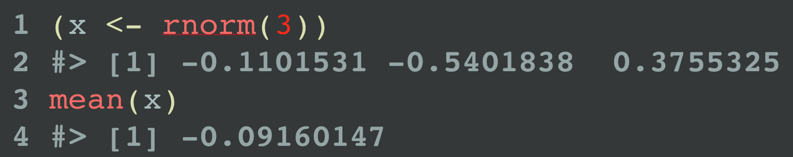

Use reprex_rtf() or reprex(venue = "rtf") to get output in Rich Text Format. This is useful for creating syntax highlighted code snippets – rendered or not – to paste into software such as Keynote or PowerPoint.
Why is RTF special? Although Pandoc can produce RTF and, therefore, so can rmarkdown::render() and reprex::reprex(), Pandoc’s syntax highlighting is unavailable for RTF output. For now, we’ve got to get the functionality from somewhere else. Syntax highlighting is a non-issue for venue = "gh" (GitHub) and venue = "so" (Stack Overflow), because the target sites take care of that when the Markdown content is displayed.

reprex(venue = "rtf") was introduced in v0.2.1 and is experimental. It requires the installation of the highlight command line tool and has only been tested on macOS. It is useful to me already and accumulating some usage is the best way to figure out how to make it useful to others. It would be preferable to use something like the highlight package at some point in the future, but let us experiment with this hack in the meantime.
If you use homebrew, here’s an easy way to install highlight from the shell:
Here is the highlight call implied by the default behaviour of reprex_rtf(...) or reprex(..., venue = "rtf"):
highlight foo_reprex.R --out-format rtf --no-trailing-nl --encoding=UTF-8 --style darkbone --font 'Courier Regular' --font-size 50 > foo_reprex.rtf
highlight options
If you don’t like the defaults, control highlight command line arguments by setting reprex.highlight.* options. Why options? I didn’t want to burden reprex() with even more arguments and this is usually something you want to set globally for yourself or for an entire project or talk or course.
Example of setting options in .Rprofile:
options(
reprex.highlight.hl_style = "darkbone",
reprex.highlight.font = "Source Code Pro",
reprex.highlight.font_size = 50
)The supported options are reprex.highlight.hl_style, reprex.highlight.font, reprex.highlight.font_size (all shown above), and reprex.highlight.other (a catchall for anything else, shown below).
You could set options for all your reprexing by doing this in your user-level .Rprofile. Create or open this file via usethis::edit_r_profile().
You could also set options for a specific Project in .Rprofile inside the Project. Create or open this file via usethis::edit_r_profile("project").
hl_style must be one of your existing highlight themes and font must be one of your installed fonts.
List available themes:
But what do these themes look like? Here are some galleries that probably have high overlap with your themes:
http://www.andre-simon.de/doku/highlight/en/theme-samples.php
https://rclickhandbuch.files.wordpress.com/2014/09/knitrthemesoverview.pdf
You can also override defaults on-the-fly. Here’s how to do that for a single call using withr and, as a bonus, how to use reprex.highlight.other to send arbitrary command line arguments to highlight:
withr::with_options(
new = c(
reprex.highlight.hl_style = "dusk",
reprex.highlight.font = "Fira Code Regular",
reprex.highlight.font_size = 35,
reprex.highlight.other = "--line-numbers --line-number-length=2 --zeroes"
),
reprex::reprex(input = c("(x <- rnorm(3))", "mean(x)"), venue = "rtf")
)
Here’s how to set highlight options for part of an R session:
op <- options(
reprex.highlight.hl_style = "anotherdark",
reprex.highlight.font = "Andale Mono Regular",
reprex.highlight.font_size = 60,
reprex.highlight.other = "--line-numbers"
)
reprex::reprex(input = c("(x <- rnorm(3))", "mean(x)"), venue = "rtf")
options(op)
Run … or not
If you just want to highlight code, but not run it, set chunk option eval = FALSE option, i.e. put a special comment as the first line of your reprex source:
The above source, when reprex()ed, will not include the usual output. This is not specific to venue = "rtf", but it’s more likely to come up in this setting.

What if each snippet can’t be self-contained?
reprex:::prex() and friends
When preparing bits of code for a presentation, it can be impractical to make each snippet completely self-contained. You really need to run the snippets in the current workspace and session. But reprex() does not allow this.
The unexported function prex() addresses this use case. It’s like reprex(), but much less reproducible!
- Code is evaluated in the global environment of the current R session.
- Current working directory is used.
-
advertise = FALSEis the default.
prex() also has “venue as suffix” variants, so reprex:::prex_rtf(...) is short for reprex:::prex(..., venue = "rtf").
This code defines x and y in the current workspace and writes the file stuff.txt to the current working directory.
x <- 1
y <- 4
writeLines("blah blah", file.path(getwd(), "stuff.txt"))Now we can show the difference between prex() and reprex().
yields
x and y can be found, even though they aren’t defined in the snippet, and stuff.txt can be read.
This is very different from executing the same code via reprex():
which yields:
ls()
#> character(0)
x + y
#> Error in eval(expr, envir, enclos): object 'x' not found
readLines("stuff.txt")
#> Warning in file(con, "r"): cannot open file 'stuff.txt': No such file or
#> directory
#> Error in file(con, "r"): cannot open the connectionx and y can’t be found, because reprex() works in a clean session, and stuff.txt can’t be found, because reprex() works in a temp directory, by default.
If you’re going to prex() a lot, you’ll want to do something like this in your .R file of snippets or in the project-specific or user-level .Rprofile:
Selectively hide and reveal code
Before prex() existed, you had to use a more cumbersome technique to produce small snippets, by hiding code. We leave this here in case it is still useful in some situations.
You can use knitr chunk options to selectively hide code, i.e. to run a large snippet, but only include a small bit in the output.
This is easiest to show by example. If you reprex() this code, only the last three lines and their output will appear in the output. But the other lines will be run, i.e. str_reverse() will be defined, as will the bizzaro() generic and default method.
#+ include = FALSE
str_reverse <- function(x) {
vapply(
strsplit(x, ""),
FUN = function(z) paste(rev(z), collapse = ""),
FUN.VALUE = "")
}
#+ include = FALSE
bizarro <- function(x) {
UseMethod("bizarro")
}
bizarro.default <- function(x) {
stop(
"Don't know how to make bizzaro <",
class(x)[[1]], ">",
call. = FALSE
)
}
#+ include = TRUE
bizarro.character <- function(x) str_reverse(x)
bizarro(c("abc", "def"))
bizarro(1:5)